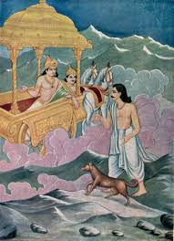

what happened after the war to pandavas

36 years after the kurukshetra war after hearing about the death of wasudev krishna, they made parikshit the king of hastinapur and left in the seach of haven.the door of heaven was at the end of the himalayas.
when they started walking a dog was also walking with them.slowly all the pandavas and dropadi except yudhishthir died.yudhishthir reached at the end of the himalayas means at the door of heaven there the dog which was walking with them from the starting turned into his real body and he was the yamraj.The Indra's rath was waiting for yudhishthir.when yudhishthir sat on the rath indra first took him to the hell(narak) and showed him that what his wife and his brothers were suffering the punishments due to there karmas.And from there indra took yudhishthir to heaven and promised him that his brothers will come here soon.